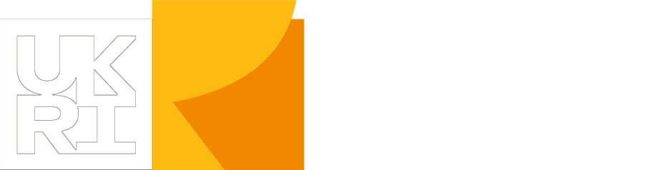
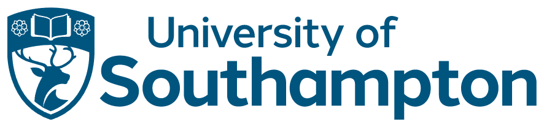

Anarcha
Where did she go?
Between 1845 and 1849, in Montgomery, Alabama, Dr. J. Marion Sims performed repeated experimental operations on enslaved women. Anarcha was one of them. By Sims’s own account, she underwent around thirty operations.
She was later declared “cured”. We use that word deliberately and in quotation marks: there is little evidence about what her life was like afterwards, and almost nothing in her own voice.
THREADS begins from that silence. It does not try to fill it with certainty. It listens to it, composes with it, and asks what the archive’s gaps can teach us about how Black women’s bodies and accounts are still heard, or not heard, in care today.
Two lanes, one thread
The work moves in two directions at once.
Back, into the archive, to speculate through composition and collective storytelling about Anarcha’s life after she was called “cured”.
Forward, into the present, where Black and Brown people still face disproportionate maternal and infant death, in the UK and globally. Here the project develops a research programme alongside the communities living this, using Endarkened Co-Composition, and their stories shape the second part of the opera.
Underneath both lanes is a question about method: can arts-based approaches be a way of doing clinical and social research, not only of responding to it?
Why THREADS
Testimony, Healing, Repair, Embodied Archives, Dreaming, the Sonic.
This research moves from and toward wholeness: listening again to these histories rather than treating the people in them as broken things to be repaired. Threads run through, connect and hold: many voices, and the sound of them, held together.
THREADS is a working name.
Funding and acknowledgements
The current phase of research (February 2026 to February 2027) is funded by a UKRI Arts and Humanities Research Council Curiosity Grant (grant number APP84248) and hosted by the University of Southampton.


The research has ethics approval from the University of Southampton.